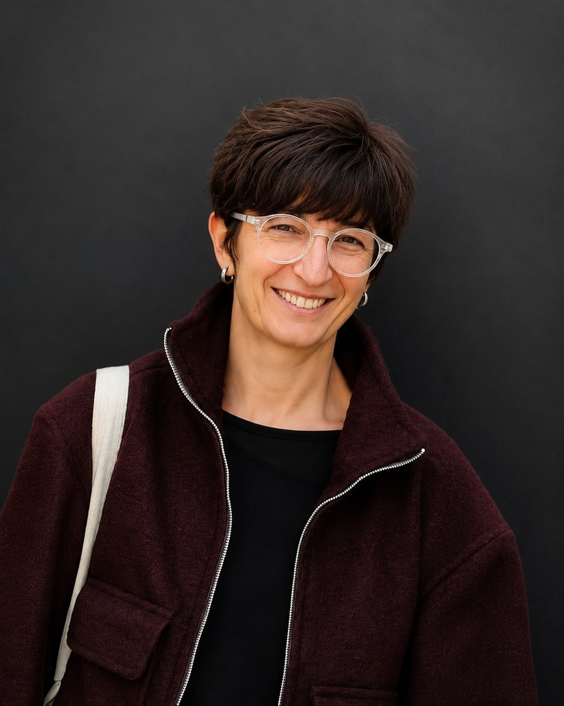
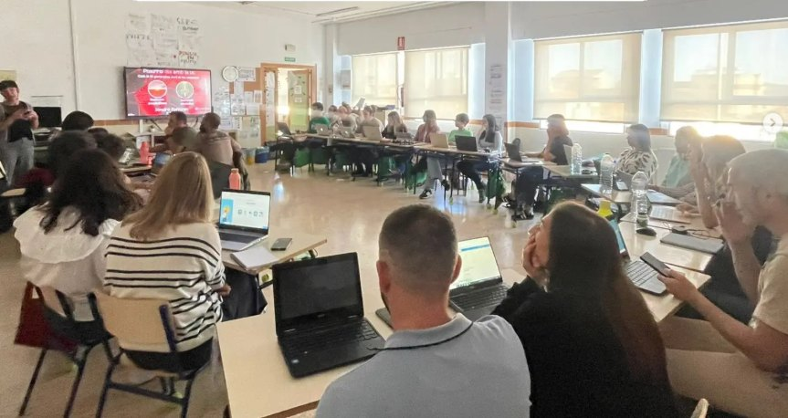
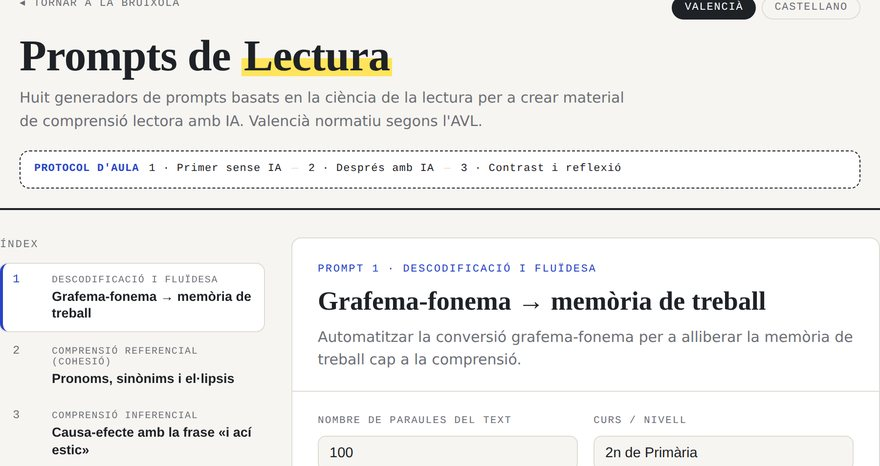
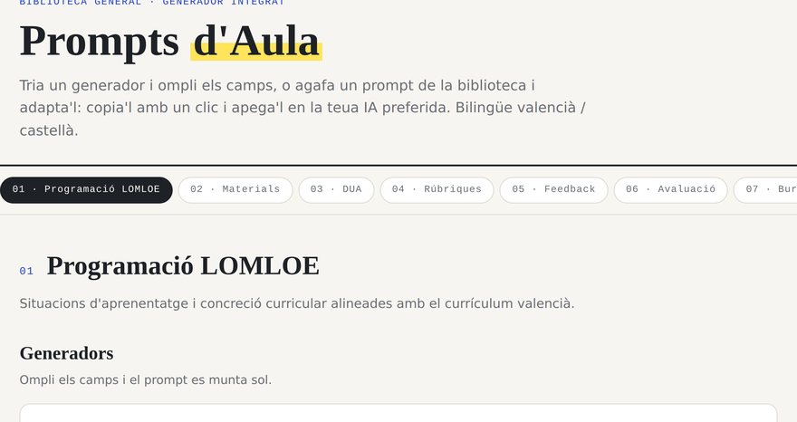
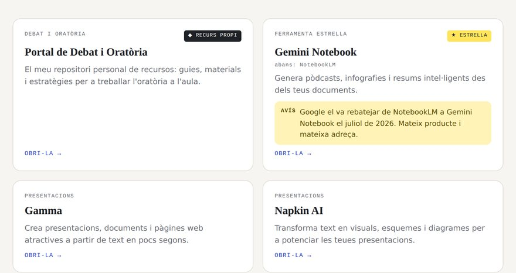
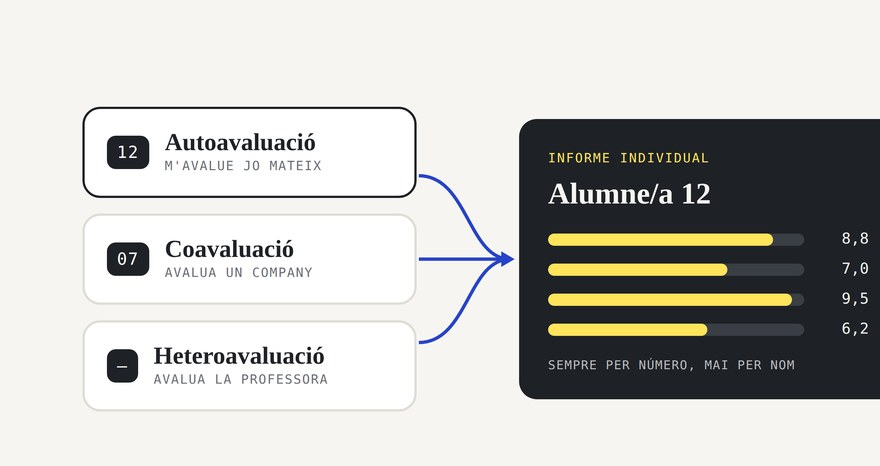
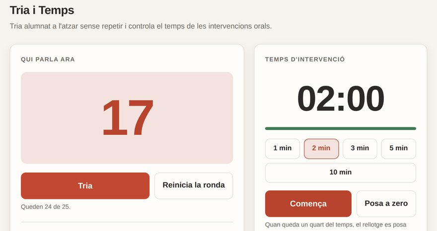
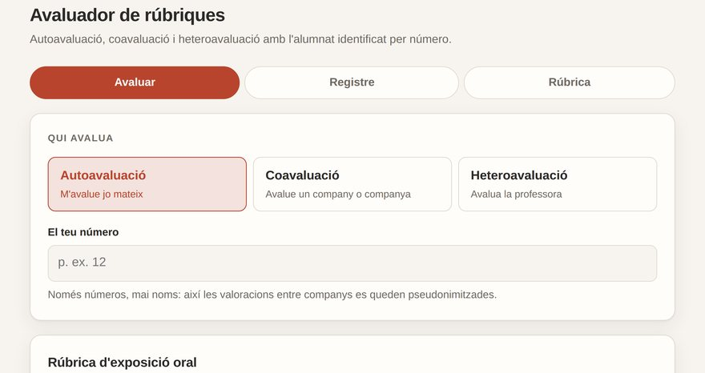

Intel·ligència Artificial aplicada a l'educació
Eines, prompting, creació de materials, personalització de l'aprenentatge, ètica i ús responsable de la IA.
Forme professorat en intel·ligència artificial educativa i en didàctica de les llengües, i cree ferramentes obertes per a l'aula.
Soc professora d'Educació Secundària Obligatòria, especialitzada en l'ensenyament de la llengua i la literatura, tant en valencià com en castellà. Entenc l'educació com una oportunitat per a despertar la curiositat, desenvolupar el pensament crític i ajudar cada alumne a descobrir la seua pròpia veu.
«La intel·ligència artificial no substitueix el docent; amplifica la seua capacitat per a inspirar, crear i transformar l'aprenentatge.»

Al llarg de la meua trajectòria professional he combinat la meua passió per les llengües amb un ferm compromís amb la innovació educativa. Dissenye situacions d'aprenentatge creatives, projectes interdisciplinaris i experiències que situen l'alumnat en el centre del procés educatiu, fent-lo protagonista del seu aprenentatge.
M'apassiona especialment la didàctica de l'oratòria i el debat acadèmic, ja que estic convençuda que aprendre a expressar-se, argumentar i escoltar és essencial per a formar ciutadans crítics, reflexius i compromesos amb la societat.
A més, soc formadora de professorat en l'àmbit de la intel·ligència artificial aplicada a l'educació. Investigue i compartisc maneres d'integrar la tecnologia de manera ètica, creativa i significativa per a enriquir els processos d'ensenyament i aprenentatge.
Aquest espai naix amb la voluntat de compartir recursos, idees i experiències que inspiren altres docents i que demostren que és possible construir una educació innovadora, humana i transformadora. Perquè educar no és només transmetre coneixements: és acompanyar, inspirar i ajudar a créixer.
Les meues principals línies de formació són:
Eines, prompting, creació de materials, personalització de l'aprenentatge, ètica i ús responsable de la IA.
Metodologies actives per a l'ensenyament del valencià i del castellà, desenvolupament de la competència comunicativa i disseny de situacions d'aprenentatge.
Estratègies per a potenciar l'expressió oral, l'argumentació, el pensament crític i les habilitats comunicatives de l'alumnat.
Aprenentatge basat en projectes, gamificació, eines digitals i disseny d'experiències d'aprenentatge motivadores.
Ús de plataformes i aplicacions per a elaborar materials interactius, activitats competencials i propostes d'avaluació.
Les meues formacions es caracteritzen per combinar fonamentació pedagògica, exemples reals i recursos pràctics que permeten al professorat transformar les seues aules de manera creativa, inclusiva i significativa.
Forme professorat en intel·ligència artificial educativa per al CEFIRE, universitats, patronals educatives i projectes europeus, sempre des de l'ús ètic, responsable i amb sentit pedagògic.
Com a formadora del Programa d'Actualització de Formació (PAF) del CEFIRE, acompanye claustres d'Infantil, Primària i Secundària de tota la província en l'ús ètic i responsable de la IA. He impartit o tutoritzat cursos del CEFIRE com Comboia't amb la IA: transforma la teua aula d'idiomes, IA en Educació Primària, IA en Educació Infantil i Habilitats socials a través de la IA, i soc formadora de l'Observatori d'Intel·ligència Artificial (OIA) i del projecte europeu Erasmus+ PRAISE, on forme docents europeus en competència digital, IA educativa, programació i robòtica.
En l'àmbit universitari, soc formadora de la microcredencial IA i tecnologies digitals per a l'ensenyament i l'aprenentatge de llengües de la Universitat de València, col·laboradora del Màster de Professorat de Secundària de Florida Universitària i col·laboradora en projectes d'investigació de la UV sobre IA i competència comunicativa. He sigut ponent, entre altres, en les Jornades d'Innovació i Experimentació amb IA de la Universitat de València, en les Jornades sobre IA i Educació de Vila-real (UNED), en les Jornades de Directors de Secundària ADIES-PV i en el 48é Congrés de FEDADI, a més de les Jornades d'Oratòria i Lliga de Debat del CEFIRE d'Alcoi.

Biblioteques de prompts pensades perquè crear material didàctic amb IA coste minuts i tinga criteri pedagògic.

Comprensió lectoraHuit generadors basats en la ciència de la lectura: descodificació, cohesió, inferència, multinivell, metacognició, lectura crítica i avaluació estil PISA. Bilingüe valencià/castellà.
OBRI LA FERRAMENTA →
Biblioteca general · Accés amb codiBiblioteca bilingüe de prompts per a docents amb generador integrat amb IA: programació LOMLOE, materials, DUA, rúbriques, feedback, avaluació, burocràcia i tutoria.
ACCÉS PER A PARTICIPANTS DE LES FORMACIONS →
Directori de ferramentesDirectori curat de ferramentes d'IA per a educació: models, imatge, vídeo, àudio, assistents docents i més. Cada ferramenta porta un avís quan canvia de nom, de condicions o deixa de rebre manteniment.
OBRI EL DIRECTORI →Recursos, activitats i materials per a treballar el debat acadèmic, l'argumentació i l'expressió oral a Secundària: perquè aprendre a expressar-se, argumentar i escoltar forma ciutadans crítics i reflexius.
Aplicacions, jocs i experiències interactives creades amb IA per a treballar la llengua amb l'alumnat: de la conjugació gamificada als simuladors i escape rooms digitals.

Avaluació · EducacióSistema d'autoavaluació, coavaluació i heteroavaluació per a centres educatius. L'alumnat s'identifica només per número —mai amb nom i cognoms— i totes les dades es queden dins del domini de Workspace del centre. Inclou informe individual, comparació entre l'autoavaluació i l'avaluació docent, i retroacció generada a partir dels descriptors de la rúbrica.
OBRI LA FERRAMENTA →
Gestió d'aula · OralitatEina d'aula per a triar alumnat a l'atzar sense repetir —per número o per nom— i controlar el temps de les intervencions orals amb un cronòmetre que avisa amb color. Funciona en el mòbil i projectada, sense connexió i sense guardar cap dada.
OBRI LA FERRAMENTA →
Avaluació · Versió obertaLa mateixa idea que l'avaluador del centre, però sense comptes ni permisos: qualsevol docent pot obrir l'enllaç i usar-lo. Autoavaluació, coavaluació i heteroavaluació amb l'alumnat identificat per número, càlcul de la nota ponderada i descàrrega dels resultats en full de càlcul. Admet qualsevol rúbrica en format JSON.
OBRI LA FERRAMENTA →M'interessa investigar la intersecció entre la tecnologia i l'aprenentatge de les llengües, amb tres línies de treball:
Com poden els models de llenguatge millorar la comprensió lectora i l'expressió escrita sense substituir el processament profund que constitueix l'aprenentatge.
El paper de la IA en el desenvolupament de l'argumentació, el debat acadèmic i la capacitat de l'alumnat per a avaluar críticament la informació.
Com integrar la innovació tecnològica des d'una mirada profundament humana, on la ferramenta amplifica la relació educativa en lloc de reemplaçar-la.
Acompanyament integral per a centres educatius: diagnòstic inicial gratuït, pla d'implantació i formació contínua amb visites presencials mensuals.
D'Ernesto he aprés bona part del que sé sobre intel·ligència artificial aplicada a l'educació, i amb ell acompanye els centres en la implantació. És el meu far en este camí: qui m'ha ensenyat que la innovació educativa només té sentit quan naix de la generositat i la col·laboració.
Vols una formació al teu centre, tens dubtes sobre alguna ferramenta o simplement vols compartir idees i experiències? Escriu-me i en parlem.
Crec en una educació que combina paraules i tecnologia, rigor i creativitat, innovació i humanitat. Perquè educar és ajudar les persones a trobar la seua veu i oferir-los les eines per a transformar el món.